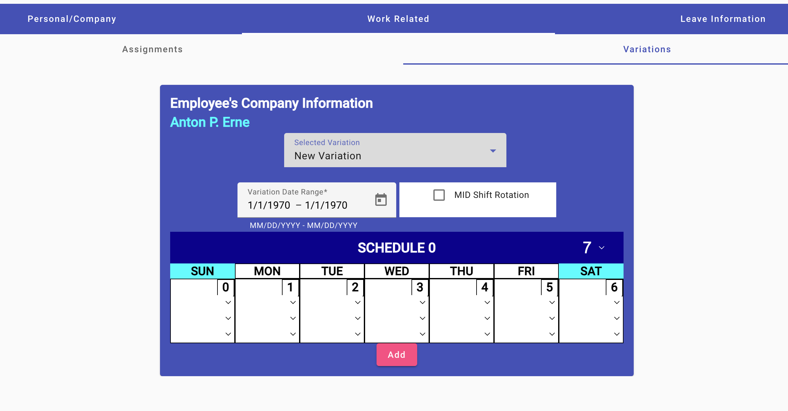
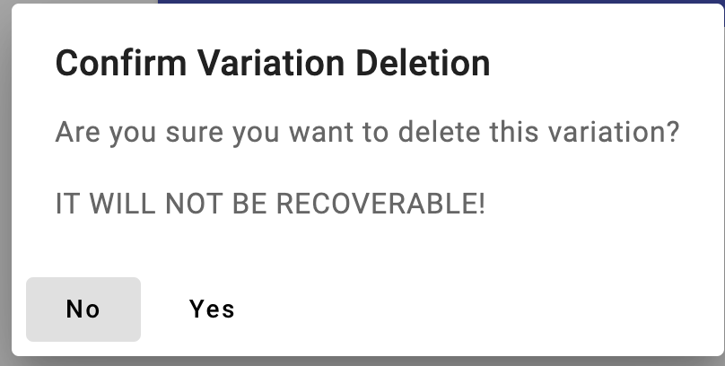

Editing Employee's Variation List
(Site Scheduler/Leadership only)

- Click on the "Work Related" tab at the top of the view
- Click on the "Variations" tab below the previous.
- Create New Variation
-
Select "New Assignment" in the "Select Assignment selector. You will be
presented with two fields below the selector, plus a single schedule to
use for the assignment with a period of 7 days.
-
Select the variation's applicable period. This requires at least two
clicks. Use the calendar icon to the right of the field to select the
start date with the first click, then select the variation's ending
date. The field will then display the start and end dates for the
variation.
-
The next field is to designate the variation as being for a mid-shift
variation or not. These are the two categories for a variation.
-
The schedule is used to define how the variation is used against the
applicable assignment.
- Change the schedule period: Select the period days (7, 14, 21, or
28) to display. If the start date doesn't begin on a Sunday, the
day in the schedule to be used is reference on the first Sunday
prior to the start date. Adjust the shift to use, workcenter and
number of hours to use each day of the period.
You are only required to set the days necessary but if the period
is longer that the number of day in the variation, you only have
to set the days of the period.
-
Adjust a schedule day: Set the shift, workcenter and number of
hours to work for each workday in the schedule or ensure all fields
for the day are blank.
-
Lastly, click the "Add" button at the bottom to save the new variation.
- Edit a Variation
-
Select the variation you want to edit from the selector listing the
available variations or "New Variation". The selected variation's
information will display in the input fields, to include the schedule to
be used by the variation.
-
Edit any information that has changed to include the inclusive dates,
whether or not the variation is a mid-shift rotation, number of days to
display for the schedule or any of the days of work. If you change the
inclusive dates you will have to pick the starting
and ending dates. All data is saved as you exit the field.
- Delete a Variation
-
Select the variation you want to delete from the selector listing the
available variations or "New Variation". The selected variation's
information will display in the input fields.
-
The delete button will appear if you didn't select "New Variation".
Click this button. A verification dialog will display.

-
Click the "Yes" button to delete the variation or "No" to not delete it.
Updating Employee Basic Info
Employee's Leave Information